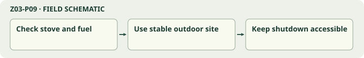

Z03-P09 · Fire and ignition
Check an outdoor stove before use
Identify placement, equipment and shutdown failures before using a stove outdoors.
When it applies · Manufacturer-rated portable camping stove. Current site restrictions determine whether use is allowed.
Equipment · Stove and compatible fuel, manufacturer instructions and a stable outdoor working surface.

Actions
- Check land rules and confirm the exact stove and fuel configuration from the instructions. Use the stove only in its intended outdoor conditions.[C01, C05, ED]
- Position the appliance away from enclosed shelters and combustibles. Keep people clear of the hot area and follow device-specific clearance requirements.[C05, C02, ED]
- Observe for instability, abnormal operation or signs of leaking fuel. Stop and follow the manufacturer's safe shutdown instructions if conditions change.[C05, C04, ED]
Verify · Check that the pot and stove are secure and that the shutoff is accessible before use.[ED]
Stop or change course · If equipment condition or clearance is uncertain, leave it off. If CO exposure is suspected, move to fresh air and seek emergency help.[C05, C07, ED]
Evidence and editorial notes
- C01 · Minnesota DNR · Fire Danger and Burning Restrictions
- Fire danger and burning restrictions map and links · Current Minnesota location, date and jurisdiction
Check current restrictions and local authority requirements before lighting.
Primary source · checked 2026-11-24 - C02 · USDA Forest Service / Smokey Bear · Smokey Bear’s Campfire Safety Guide
- Build your campfire; choose a location · Where campfires are currently permitted
Use an established fire ring where required or available. Protect the area from nearby combustible materials, avoid windy conditions and keep water ready.
Primary source · checked 2026-11-24 - C04 · USDA Forest Service / Smokey Bear · Smokey Bear’s Campfire Safety Guide
- Maintain and extinguish a campfire · Occupied campfire, water and tools available
Stay with the fire. Drown, stir and add water again until cool. Leaving visible embers or merely covering them is unsafe.
Primary source · checked 2026-11-24 - C05 · CPSC · Portable Heaters and Camping Equipment
- Carbon monoxide poisoning from portable camping equipment · Tents, campers, vehicles and other enclosed spaces
Fuel-burning camping equipment can lead to fatal carbon monoxide buildup in enclosed spaces.
Primary source · checked 2026-11-24 - C07 · CPSC · Carbon Monoxide Fact Sheet
- CO poisoning symptoms; what to do if suspected · Suspected carbon monoxide exposure
Escape to fresh air immediately and contact emergency services. Symptoms can include headache, dizziness, nausea and confusion.
Primary source · checked 2026-11-24
Source lineage · CDC and CPSC equipment safety; new manuscript.